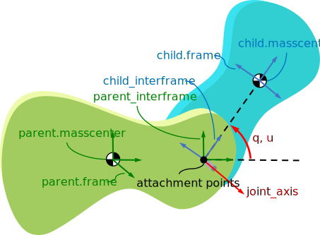

Joints Framework (Docstrings)#
Joint (Docstrings)#
- class sympy.physics.mechanics.joint.Joint(name, parent, child, coordinates=None, speeds=None, parent_point=None, child_point=None, parent_interframe=None, child_interframe=None, parent_axis=None, child_axis=None, parent_joint_pos=None, child_joint_pos=None)[source]#
Abstract base class for all specific joints.
- Parameters:
name : string
A unique name for the joint.
parent : Particle or RigidBody or Body
The parent body of joint.
child : Particle or RigidBody or Body
The child body of joint.
coordinates : iterable of dynamicsymbols, optional
Generalized coordinates of the joint.
speeds : iterable of dynamicsymbols, optional
Generalized speeds of joint.
parent_point : Point or Vector, optional
Attachment point where the joint is fixed to the parent body. If a vector is provided, then the attachment point is computed by adding the vector to the body’s mass center. The default value is the parent’s mass center.
child_point : Point or Vector, optional
Attachment point where the joint is fixed to the child body. If a vector is provided, then the attachment point is computed by adding the vector to the body’s mass center. The default value is the child’s mass center.
parent_axis : Vector, optional
Deprecated since version 1.12: Axis fixed in the parent body which aligns with an axis fixed in the child body. The default is the x axis of parent’s reference frame. For more information on this deprecation, see New Joint intermediate frames.
child_axis : Vector, optional
Deprecated since version 1.12: Axis fixed in the child body which aligns with an axis fixed in the parent body. The default is the x axis of child’s reference frame. For more information on this deprecation, see New Joint intermediate frames.
parent_interframe : ReferenceFrame, optional
Intermediate frame of the parent body with respect to which the joint transformation is formulated. If a Vector is provided then an interframe is created which aligns its X axis with the given vector. The default value is the parent’s own frame.
child_interframe : ReferenceFrame, optional
Intermediate frame of the child body with respect to which the joint transformation is formulated. If a Vector is provided then an interframe is created which aligns its X axis with the given vector. The default value is the child’s own frame.
parent_joint_pos : Point or Vector, optional
Deprecated since version 1.12: This argument is replaced by parent_point and will be removed in a future version. See Change in joint attachment point argument for more information.
child_joint_pos : Point or Vector, optional
Deprecated since version 1.12: This argument is replaced by child_point and will be removed in a future version. See Change in joint attachment point argument for more information.
Explanation
A joint subtracts degrees of freedom from a body. This is the base class for all specific joints and holds all common methods acting as an interface for all joints. Custom joint can be created by inheriting Joint class and defining all abstract functions.
The abstract methods are:
_generate_coordinates_generate_speeds_orient_frames_set_angular_velocity_set_linear_velocity
Notes
When providing a vector as the intermediate frame, a new intermediate frame is created which aligns its X axis with the provided vector. This is done with a single fixed rotation about a rotation axis. This rotation axis is determined by taking the cross product of the
body.xaxis with the provided vector. In the case where the provided vector is in the-body.xdirection, the rotation is done about thebody.yaxis.Attributes
name
(string) The joint’s name.
parent
(Particle or RigidBody or Body) The joint’s parent body.
child
(Particle or RigidBody or Body) The joint’s child body.
coordinates
(Matrix) Matrix of the joint’s generalized coordinates.
speeds
(Matrix) Matrix of the joint’s generalized speeds.
parent_point
(Point) Attachment point where the joint is fixed to the parent body.
child_point
(Point) Attachment point where the joint is fixed to the child body.
parent_axis
(Vector) The axis fixed in the parent frame that represents the joint.
child_axis
(Vector) The axis fixed in the child frame that represents the joint.
parent_interframe
(ReferenceFrame) Intermediate frame of the parent body with respect to which the joint transformation is formulated.
child_interframe
(ReferenceFrame) Intermediate frame of the child body with respect to which the joint transformation is formulated.
kdes
(Matrix) Kinematical differential equations of the joint.
- property child#
Child body of Joint.
- property child_axis#
The axis of child frame.
- property child_point#
Attachment point where the joint is fixed to the child body.
- property coordinates#
Matrix of the joint’s generalized coordinates.
- property kdes#
Kinematical differential equations of the joint.
- property name#
Name of the joint.
- property parent#
Parent body of Joint.
- property parent_axis#
The axis of parent frame.
- property parent_point#
Attachment point where the joint is fixed to the parent body.
- property speeds#
Matrix of the joint’s generalized speeds.
- class sympy.physics.mechanics.joint.PinJoint(name, parent, child, coordinates=None, speeds=None, parent_point=None, child_point=None, parent_interframe=None, child_interframe=None, parent_axis=None, child_axis=None, joint_axis=None, parent_joint_pos=None, child_joint_pos=None)[source]#
Pin (Revolute) Joint.
- Parameters:
name : string
A unique name for the joint.
parent : Particle or RigidBody or Body
The parent body of joint.
child : Particle or RigidBody or Body
The child body of joint.
coordinates : dynamicsymbol, optional
Generalized coordinates of the joint.
speeds : dynamicsymbol, optional
Generalized speeds of joint.
parent_point : Point or Vector, optional
Attachment point where the joint is fixed to the parent body. If a vector is provided, then the attachment point is computed by adding the vector to the body’s mass center. The default value is the parent’s mass center.
child_point : Point or Vector, optional
Attachment point where the joint is fixed to the child body. If a vector is provided, then the attachment point is computed by adding the vector to the body’s mass center. The default value is the child’s mass center.
parent_axis : Vector, optional
Deprecated since version 1.12: Axis fixed in the parent body which aligns with an axis fixed in the child body. The default is the x axis of parent’s reference frame. For more information on this deprecation, see New Joint intermediate frames.
child_axis : Vector, optional
Deprecated since version 1.12: Axis fixed in the child body which aligns with an axis fixed in the parent body. The default is the x axis of child’s reference frame. For more information on this deprecation, see New Joint intermediate frames.
parent_interframe : ReferenceFrame, optional
Intermediate frame of the parent body with respect to which the joint transformation is formulated. If a Vector is provided then an interframe is created which aligns its X axis with the given vector. The default value is the parent’s own frame.
child_interframe : ReferenceFrame, optional
Intermediate frame of the child body with respect to which the joint transformation is formulated. If a Vector is provided then an interframe is created which aligns its X axis with the given vector. The default value is the child’s own frame.
joint_axis : Vector
The axis about which the rotation occurs. Note that the components of this axis are the same in the parent_interframe and child_interframe.
parent_joint_pos : Point or Vector, optional
Deprecated since version 1.12: This argument is replaced by parent_point and will be removed in a future version. See Change in joint attachment point argument for more information.
child_joint_pos : Point or Vector, optional
Deprecated since version 1.12: This argument is replaced by child_point and will be removed in a future version. See Change in joint attachment point argument for more information.
Explanation
A pin joint is defined such that the joint rotation axis is fixed in both the child and parent and the location of the joint is relative to the mass center of each body. The child rotates an angle, θ, from the parent about the rotation axis and has a simple angular speed, ω, relative to the parent. The direction cosine matrix between the child interframe and parent interframe is formed using a simple rotation about the joint axis. The page on the joints framework gives a more detailed explanation of the intermediate frames.
Examples
A single pin joint is created from two bodies and has the following basic attributes:
>>> from sympy.physics.mechanics import RigidBody, PinJoint >>> parent = RigidBody('P') >>> parent P >>> child = RigidBody('C') >>> child C >>> joint = PinJoint('PC', parent, child) >>> joint PinJoint: PC parent: P child: C >>> joint.name 'PC' >>> joint.parent P >>> joint.child C >>> joint.parent_point P_masscenter >>> joint.child_point C_masscenter >>> joint.parent_axis P_frame.x >>> joint.child_axis C_frame.x >>> joint.coordinates Matrix([[q_PC(t)]]) >>> joint.speeds Matrix([[u_PC(t)]]) >>> child.frame.ang_vel_in(parent.frame) u_PC(t)*P_frame.x >>> child.frame.dcm(parent.frame) Matrix([ [1, 0, 0], [0, cos(q_PC(t)), sin(q_PC(t))], [0, -sin(q_PC(t)), cos(q_PC(t))]]) >>> joint.child_point.pos_from(joint.parent_point) 0
To further demonstrate the use of the pin joint, the kinematics of simple double pendulum that rotates about the Z axis of each connected body can be created as follows.
>>> from sympy import symbols, trigsimp >>> from sympy.physics.mechanics import RigidBody, PinJoint >>> l1, l2 = symbols('l1 l2')
First create bodies to represent the fixed ceiling and one to represent each pendulum bob.
>>> ceiling = RigidBody('C') >>> upper_bob = RigidBody('U') >>> lower_bob = RigidBody('L')
The first joint will connect the upper bob to the ceiling by a distance of
l1and the joint axis will be about the Z axis for each body.>>> ceiling_joint = PinJoint('P1', ceiling, upper_bob, ... child_point=-l1*upper_bob.frame.x, ... joint_axis=ceiling.frame.z)
The second joint will connect the lower bob to the upper bob by a distance of
l2and the joint axis will also be about the Z axis for each body.>>> pendulum_joint = PinJoint('P2', upper_bob, lower_bob, ... child_point=-l2*lower_bob.frame.x, ... joint_axis=upper_bob.frame.z)
Once the joints are established the kinematics of the connected bodies can be accessed. First the direction cosine matrices of pendulum link relative to the ceiling are found:
>>> upper_bob.frame.dcm(ceiling.frame) Matrix([ [ cos(q_P1(t)), sin(q_P1(t)), 0], [-sin(q_P1(t)), cos(q_P1(t)), 0], [ 0, 0, 1]]) >>> trigsimp(lower_bob.frame.dcm(ceiling.frame)) Matrix([ [ cos(q_P1(t) + q_P2(t)), sin(q_P1(t) + q_P2(t)), 0], [-sin(q_P1(t) + q_P2(t)), cos(q_P1(t) + q_P2(t)), 0], [ 0, 0, 1]])
The position of the lower bob’s masscenter is found with:
>>> lower_bob.masscenter.pos_from(ceiling.masscenter) l1*U_frame.x + l2*L_frame.x
The angular velocities of the two pendulum links can be computed with respect to the ceiling.
>>> upper_bob.frame.ang_vel_in(ceiling.frame) u_P1(t)*C_frame.z >>> lower_bob.frame.ang_vel_in(ceiling.frame) u_P1(t)*C_frame.z + u_P2(t)*U_frame.z
And finally, the linear velocities of the two pendulum bobs can be computed with respect to the ceiling.
>>> upper_bob.masscenter.vel(ceiling.frame) l1*u_P1(t)*U_frame.y >>> lower_bob.masscenter.vel(ceiling.frame) l1*u_P1(t)*U_frame.y + l2*(u_P1(t) + u_P2(t))*L_frame.y
Attributes
name
(string) The joint’s name.
parent
(Particle or RigidBody or Body) The joint’s parent body.
child
(Particle or RigidBody or Body) The joint’s child body.
coordinates
(Matrix) Matrix of the joint’s generalized coordinates. The default value is
dynamicsymbols(f'q_{joint.name}').speeds
(Matrix) Matrix of the joint’s generalized speeds. The default value is
dynamicsymbols(f'u_{joint.name}').parent_point
(Point) Attachment point where the joint is fixed to the parent body.
child_point
(Point) Attachment point where the joint is fixed to the child body.
parent_axis
(Vector) The axis fixed in the parent frame that represents the joint.
child_axis
(Vector) The axis fixed in the child frame that represents the joint.
parent_interframe
(ReferenceFrame) Intermediate frame of the parent body with respect to which the joint transformation is formulated.
child_interframe
(ReferenceFrame) Intermediate frame of the child body with respect to which the joint transformation is formulated.
joint_axis
(Vector) The axis about which the rotation occurs. Note that the components of this axis are the same in the parent_interframe and child_interframe.
kdes
(Matrix) Kinematical differential equations of the joint.
- property joint_axis#
Axis about which the child rotates with respect to the parent.
- class sympy.physics.mechanics.joint.PrismaticJoint(name, parent, child, coordinates=None, speeds=None, parent_point=None, child_point=None, parent_interframe=None, child_interframe=None, parent_axis=None, child_axis=None, joint_axis=None, parent_joint_pos=None, child_joint_pos=None)[source]#
Prismatic (Sliding) Joint.

- Parameters:
name : string
A unique name for the joint.
parent : Particle or RigidBody or Body
The parent body of joint.
child : Particle or RigidBody or Body
The child body of joint.
coordinates : dynamicsymbol, optional
Generalized coordinates of the joint. The default value is
dynamicsymbols(f'q_{joint.name}').speeds : dynamicsymbol, optional
Generalized speeds of joint. The default value is
dynamicsymbols(f'u_{joint.name}').parent_point : Point or Vector, optional
Attachment point where the joint is fixed to the parent body. If a vector is provided, then the attachment point is computed by adding the vector to the body’s mass center. The default value is the parent’s mass center.
child_point : Point or Vector, optional
Attachment point where the joint is fixed to the child body. If a vector is provided, then the attachment point is computed by adding the vector to the body’s mass center. The default value is the child’s mass center.
parent_axis : Vector, optional
Deprecated since version 1.12: Axis fixed in the parent body which aligns with an axis fixed in the child body. The default is the x axis of parent’s reference frame. For more information on this deprecation, see New Joint intermediate frames.
child_axis : Vector, optional
Deprecated since version 1.12: Axis fixed in the child body which aligns with an axis fixed in the parent body. The default is the x axis of child’s reference frame. For more information on this deprecation, see New Joint intermediate frames.
parent_interframe : ReferenceFrame, optional
Intermediate frame of the parent body with respect to which the joint transformation is formulated. If a Vector is provided then an interframe is created which aligns its X axis with the given vector. The default value is the parent’s own frame.
child_interframe : ReferenceFrame, optional
Intermediate frame of the child body with respect to which the joint transformation is formulated. If a Vector is provided then an interframe is created which aligns its X axis with the given vector. The default value is the child’s own frame.
joint_axis : Vector
The axis along which the translation occurs. Note that the components of this axis are the same in the parent_interframe and child_interframe.
parent_joint_pos : Point or Vector, optional
Deprecated since version 1.12: This argument is replaced by parent_point and will be removed in a future version. See Change in joint attachment point argument for more information.
child_joint_pos : Point or Vector, optional
Deprecated since version 1.12: This argument is replaced by child_point and will be removed in a future version. See Change in joint attachment point argument for more information.
Explanation
It is defined such that the child body translates with respect to the parent body along the body-fixed joint axis. The location of the joint is defined by two points, one in each body, which coincide when the generalized coordinate is zero. The direction cosine matrix between the parent_interframe and child_interframe is the identity matrix. Therefore, the direction cosine matrix between the parent and child frames is fully defined by the definition of the intermediate frames. The page on the joints framework gives a more detailed explanation of the intermediate frames.
Examples
A single prismatic joint is created from two bodies and has the following basic attributes:
>>> from sympy.physics.mechanics import RigidBody, PrismaticJoint >>> parent = RigidBody('P') >>> parent P >>> child = RigidBody('C') >>> child C >>> joint = PrismaticJoint('PC', parent, child) >>> joint PrismaticJoint: PC parent: P child: C >>> joint.name 'PC' >>> joint.parent P >>> joint.child C >>> joint.parent_point P_masscenter >>> joint.child_point C_masscenter >>> joint.parent_axis P_frame.x >>> joint.child_axis C_frame.x >>> joint.coordinates Matrix([[q_PC(t)]]) >>> joint.speeds Matrix([[u_PC(t)]]) >>> child.frame.ang_vel_in(parent.frame) 0 >>> child.frame.dcm(parent.frame) Matrix([ [1, 0, 0], [0, 1, 0], [0, 0, 1]]) >>> joint.child_point.pos_from(joint.parent_point) q_PC(t)*P_frame.x
To further demonstrate the use of the prismatic joint, the kinematics of two masses sliding, one moving relative to a fixed body and the other relative to the moving body. about the X axis of each connected body can be created as follows.
>>> from sympy.physics.mechanics import PrismaticJoint, RigidBody
First create bodies to represent the fixed ceiling and one to represent a particle.
>>> wall = RigidBody('W') >>> Part1 = RigidBody('P1') >>> Part2 = RigidBody('P2')
The first joint will connect the particle to the ceiling and the joint axis will be about the X axis for each body.
>>> J1 = PrismaticJoint('J1', wall, Part1)
The second joint will connect the second particle to the first particle and the joint axis will also be about the X axis for each body.
>>> J2 = PrismaticJoint('J2', Part1, Part2)
Once the joint is established the kinematics of the connected bodies can be accessed. First the direction cosine matrices of Part relative to the ceiling are found:
>>> Part1.frame.dcm(wall.frame) Matrix([ [1, 0, 0], [0, 1, 0], [0, 0, 1]])
>>> Part2.frame.dcm(wall.frame) Matrix([ [1, 0, 0], [0, 1, 0], [0, 0, 1]])
The position of the particles’ masscenter is found with:
>>> Part1.masscenter.pos_from(wall.masscenter) q_J1(t)*W_frame.x
>>> Part2.masscenter.pos_from(wall.masscenter) q_J1(t)*W_frame.x + q_J2(t)*P1_frame.x
The angular velocities of the two particle links can be computed with respect to the ceiling.
>>> Part1.frame.ang_vel_in(wall.frame) 0
>>> Part2.frame.ang_vel_in(wall.frame) 0
And finally, the linear velocities of the two particles can be computed with respect to the ceiling.
>>> Part1.masscenter.vel(wall.frame) u_J1(t)*W_frame.x
>>> Part2.masscenter.vel(wall.frame) u_J1(t)*W_frame.x + Derivative(q_J2(t), t)*P1_frame.x
Attributes
name
(string) The joint’s name.
parent
(Particle or RigidBody or Body) The joint’s parent body.
child
(Particle or RigidBody or Body) The joint’s child body.
coordinates
(Matrix) Matrix of the joint’s generalized coordinates.
speeds
(Matrix) Matrix of the joint’s generalized speeds.
parent_point
(Point) Attachment point where the joint is fixed to the parent body.
child_point
(Point) Attachment point where the joint is fixed to the child body.
parent_axis
(Vector) The axis fixed in the parent frame that represents the joint.
child_axis
(Vector) The axis fixed in the child frame that represents the joint.
parent_interframe
(ReferenceFrame) Intermediate frame of the parent body with respect to which the joint transformation is formulated.
child_interframe
(ReferenceFrame) Intermediate frame of the child body with respect to which the joint transformation is formulated.
kdes
(Matrix) Kinematical differential equations of the joint.
- property joint_axis#
Axis along which the child translates with respect to the parent.
- class sympy.physics.mechanics.joint.CylindricalJoint(name, parent, child, rotation_coordinate=None, translation_coordinate=None, rotation_speed=None, translation_speed=None, parent_point=None, child_point=None, parent_interframe=None, child_interframe=None, joint_axis=None)[source]#
Cylindrical Joint.

- Parameters:
name : string
A unique name for the joint.
parent : Particle or RigidBody or Body
The parent body of joint.
child : Particle or RigidBody or Body
The child body of joint.
rotation_coordinate : dynamicsymbol, optional
Generalized coordinate corresponding to the rotation angle. The default value is
dynamicsymbols(f'q0_{joint.name}').translation_coordinate : dynamicsymbol, optional
Generalized coordinate corresponding to the translation distance. The default value is
dynamicsymbols(f'q1_{joint.name}').rotation_speed : dynamicsymbol, optional
Generalized speed corresponding to the angular velocity. The default value is
dynamicsymbols(f'u0_{joint.name}').translation_speed : dynamicsymbol, optional
Generalized speed corresponding to the translation velocity. The default value is
dynamicsymbols(f'u1_{joint.name}').parent_point : Point or Vector, optional
Attachment point where the joint is fixed to the parent body. If a vector is provided, then the attachment point is computed by adding the vector to the body’s mass center. The default value is the parent’s mass center.
child_point : Point or Vector, optional
Attachment point where the joint is fixed to the child body. If a vector is provided, then the attachment point is computed by adding the vector to the body’s mass center. The default value is the child’s mass center.
parent_interframe : ReferenceFrame, optional
Intermediate frame of the parent body with respect to which the joint transformation is formulated. If a Vector is provided then an interframe is created which aligns its X axis with the given vector. The default value is the parent’s own frame.
child_interframe : ReferenceFrame, optional
Intermediate frame of the child body with respect to which the joint transformation is formulated. If a Vector is provided then an interframe is created which aligns its X axis with the given vector. The default value is the child’s own frame.
joint_axis : Vector, optional
The rotation as well as translation axis. Note that the components of this axis are the same in the parent_interframe and child_interframe.
Explanation
A cylindrical joint is defined such that the child body both rotates about and translates along the body-fixed joint axis with respect to the parent body. The joint axis is both the rotation axis and translation axis. The location of the joint is defined by two points, one in each body, which coincide when the generalized coordinate corresponding to the translation is zero. The direction cosine matrix between the child interframe and parent interframe is formed using a simple rotation about the joint axis. The page on the joints framework gives a more detailed explanation of the intermediate frames.
Examples
A single cylindrical joint is created between two bodies and has the following basic attributes:
>>> from sympy.physics.mechanics import RigidBody, CylindricalJoint >>> parent = RigidBody('P') >>> parent P >>> child = RigidBody('C') >>> child C >>> joint = CylindricalJoint('PC', parent, child) >>> joint CylindricalJoint: PC parent: P child: C >>> joint.name 'PC' >>> joint.parent P >>> joint.child C >>> joint.parent_point P_masscenter >>> joint.child_point C_masscenter >>> joint.parent_axis P_frame.x >>> joint.child_axis C_frame.x >>> joint.coordinates Matrix([ [q0_PC(t)], [q1_PC(t)]]) >>> joint.speeds Matrix([ [u0_PC(t)], [u1_PC(t)]]) >>> child.frame.ang_vel_in(parent.frame) u0_PC(t)*P_frame.x >>> child.frame.dcm(parent.frame) Matrix([ [1, 0, 0], [0, cos(q0_PC(t)), sin(q0_PC(t))], [0, -sin(q0_PC(t)), cos(q0_PC(t))]]) >>> joint.child_point.pos_from(joint.parent_point) q1_PC(t)*P_frame.x >>> child.masscenter.vel(parent.frame) u1_PC(t)*P_frame.x
To further demonstrate the use of the cylindrical joint, the kinematics of two cylindrical joints perpendicular to each other can be created as follows.
>>> from sympy import symbols >>> from sympy.physics.mechanics import RigidBody, CylindricalJoint >>> r, l, w = symbols('r l w')
First create bodies to represent the fixed floor with a fixed pole on it. The second body represents a freely moving tube around that pole. The third body represents a solid flag freely translating along and rotating around the Y axis of the tube.
>>> floor = RigidBody('floor') >>> tube = RigidBody('tube') >>> flag = RigidBody('flag')
The first joint will connect the first tube to the floor with it translating along and rotating around the Z axis of both bodies.
>>> floor_joint = CylindricalJoint('C1', floor, tube, joint_axis=floor.z)
The second joint will connect the tube perpendicular to the flag along the Y axis of both the tube and the flag, with the joint located at a distance
rfrom the tube’s center of mass and a combination of the distanceslandwfrom the flag’s center of mass.>>> flag_joint = CylindricalJoint('C2', tube, flag, ... parent_point=r * tube.y, ... child_point=-w * flag.y + l * flag.z, ... joint_axis=tube.y)
Once the joints are established the kinematics of the connected bodies can be accessed. First the direction cosine matrices of both the body and the flag relative to the floor are found:
>>> tube.frame.dcm(floor.frame) Matrix([ [ cos(q0_C1(t)), sin(q0_C1(t)), 0], [-sin(q0_C1(t)), cos(q0_C1(t)), 0], [ 0, 0, 1]]) >>> flag.frame.dcm(floor.frame) Matrix([ [cos(q0_C1(t))*cos(q0_C2(t)), sin(q0_C1(t))*cos(q0_C2(t)), -sin(q0_C2(t))], [ -sin(q0_C1(t)), cos(q0_C1(t)), 0], [sin(q0_C2(t))*cos(q0_C1(t)), sin(q0_C1(t))*sin(q0_C2(t)), cos(q0_C2(t))]])
The position of the flag’s center of mass is found with:
>>> flag.masscenter.pos_from(floor.masscenter) q1_C1(t)*floor_frame.z + (r + q1_C2(t))*tube_frame.y + w*flag_frame.y - l*flag_frame.z
The angular velocities of the two tubes can be computed with respect to the floor.
>>> tube.frame.ang_vel_in(floor.frame) u0_C1(t)*floor_frame.z >>> flag.frame.ang_vel_in(floor.frame) u0_C1(t)*floor_frame.z + u0_C2(t)*tube_frame.y
Finally, the linear velocities of the two tube centers of mass can be computed with respect to the floor, while expressed in the tube’s frame.
>>> tube.masscenter.vel(floor.frame).to_matrix(tube.frame) Matrix([ [ 0], [ 0], [u1_C1(t)]]) >>> flag.masscenter.vel(floor.frame).to_matrix(tube.frame).simplify() Matrix([ [-l*u0_C2(t)*cos(q0_C2(t)) - r*u0_C1(t) - w*u0_C1(t) - q1_C2(t)*u0_C1(t)], [ -l*u0_C1(t)*sin(q0_C2(t)) + Derivative(q1_C2(t), t)], [ l*u0_C2(t)*sin(q0_C2(t)) + u1_C1(t)]])
Attributes
name
(string) The joint’s name.
parent
(Particle or RigidBody or Body) The joint’s parent body.
child
(Particle or RigidBody or Body) The joint’s child body.
rotation_coordinate
(dynamicsymbol) Generalized coordinate corresponding to the rotation angle.
translation_coordinate
(dynamicsymbol) Generalized coordinate corresponding to the translation distance.
rotation_speed
(dynamicsymbol) Generalized speed corresponding to the angular velocity.
translation_speed
(dynamicsymbol) Generalized speed corresponding to the translation velocity.
coordinates
(Matrix) Matrix of the joint’s generalized coordinates.
speeds
(Matrix) Matrix of the joint’s generalized speeds.
parent_point
(Point) Attachment point where the joint is fixed to the parent body.
child_point
(Point) Attachment point where the joint is fixed to the child body.
parent_interframe
(ReferenceFrame) Intermediate frame of the parent body with respect to which the joint transformation is formulated.
child_interframe
(ReferenceFrame) Intermediate frame of the child body with respect to which the joint transformation is formulated.
kdes
(Matrix) Kinematical differential equations of the joint.
joint_axis
(Vector) The axis of rotation and translation.
- property joint_axis#
Axis about and along which the rotation and translation occurs.
- property rotation_coordinate#
Generalized coordinate corresponding to the rotation angle.
- property rotation_speed#
Generalized speed corresponding to the angular velocity.
- property translation_coordinate#
Generalized coordinate corresponding to the translation distance.
- property translation_speed#
Generalized speed corresponding to the translation velocity.
- class sympy.physics.mechanics.joint.PlanarJoint(name, parent, child, rotation_coordinate=None, planar_coordinates=None, rotation_speed=None, planar_speeds=None, parent_point=None, child_point=None, parent_interframe=None, child_interframe=None)[source]#
Planar Joint.

- Parameters:
name : string
A unique name for the joint.
parent : Particle or RigidBody or Body
The parent body of joint.
child : Particle or RigidBody or Body
The child body of joint.
rotation_coordinate : dynamicsymbol, optional
Generalized coordinate corresponding to the rotation angle. The default value is
dynamicsymbols(f'q0_{joint.name}').planar_coordinates : iterable of dynamicsymbols, optional
Two generalized coordinates used for the planar translation. The default value is
dynamicsymbols(f'q1_{joint.name} q2_{joint.name}').rotation_speed : dynamicsymbol, optional
Generalized speed corresponding to the angular velocity. The default value is
dynamicsymbols(f'u0_{joint.name}').planar_speeds : dynamicsymbols, optional
Two generalized speeds used for the planar translation velocity. The default value is
dynamicsymbols(f'u1_{joint.name} u2_{joint.name}').parent_point : Point or Vector, optional
Attachment point where the joint is fixed to the parent body. If a vector is provided, then the attachment point is computed by adding the vector to the body’s mass center. The default value is the parent’s mass center.
child_point : Point or Vector, optional
Attachment point where the joint is fixed to the child body. If a vector is provided, then the attachment point is computed by adding the vector to the body’s mass center. The default value is the child’s mass center.
parent_interframe : ReferenceFrame, optional
Intermediate frame of the parent body with respect to which the joint transformation is formulated. If a Vector is provided then an interframe is created which aligns its X axis with the given vector. The default value is the parent’s own frame.
child_interframe : ReferenceFrame, optional
Intermediate frame of the child body with respect to which the joint transformation is formulated. If a Vector is provided then an interframe is created which aligns its X axis with the given vector. The default value is the child’s own frame.
Explanation
A planar joint is defined such that the child body translates over a fixed plane of the parent body as well as rotate about the rotation axis, which is perpendicular to that plane. The origin of this plane is the
parent_pointand the plane is spanned by two nonparallel planar vectors. The location of thechild_pointis based on the planar vectors (\(\vec{v}_1\), \(\vec{v}_2\)) and generalized coordinates (\(q_1\), \(q_2\)), i.e. \(\vec{r} = q_1 \hat{v}_1 + q_2 \hat{v}_2\). The direction cosine matrix between thechild_interframeandparent_interframeis formed using a simple rotation (\(q_0\)) about the rotation axis.In order to simplify the definition of the
PlanarJoint, therotation_axisandplanar_vectorsare set to be the unit vectors of theparent_interframeaccording to the table below. This ensures that you can only define these vectors by creating a separate frame and supplying that as the interframe. If you however would only like to supply the normals of the plane with respect to the parent and child bodies, then you can also supply those to theparent_interframeandchild_interframearguments. An example of both of these cases is in the examples section below and the page on the joints framework provides a more detailed explanation of the intermediate frames.rotation_axisparent_interframe.xplanar_vectors[0]parent_interframe.yplanar_vectors[1]parent_interframe.zExamples
A single planar joint is created between two bodies and has the following basic attributes:
>>> from sympy.physics.mechanics import RigidBody, PlanarJoint >>> parent = RigidBody('P') >>> parent P >>> child = RigidBody('C') >>> child C >>> joint = PlanarJoint('PC', parent, child) >>> joint PlanarJoint: PC parent: P child: C >>> joint.name 'PC' >>> joint.parent P >>> joint.child C >>> joint.parent_point P_masscenter >>> joint.child_point C_masscenter >>> joint.rotation_axis P_frame.x >>> joint.planar_vectors [P_frame.y, P_frame.z] >>> joint.rotation_coordinate q0_PC(t) >>> joint.planar_coordinates Matrix([ [q1_PC(t)], [q2_PC(t)]]) >>> joint.coordinates Matrix([ [q0_PC(t)], [q1_PC(t)], [q2_PC(t)]]) >>> joint.rotation_speed u0_PC(t) >>> joint.planar_speeds Matrix([ [u1_PC(t)], [u2_PC(t)]]) >>> joint.speeds Matrix([ [u0_PC(t)], [u1_PC(t)], [u2_PC(t)]]) >>> child.frame.ang_vel_in(parent.frame) u0_PC(t)*P_frame.x >>> child.frame.dcm(parent.frame) Matrix([ [1, 0, 0], [0, cos(q0_PC(t)), sin(q0_PC(t))], [0, -sin(q0_PC(t)), cos(q0_PC(t))]]) >>> joint.child_point.pos_from(joint.parent_point) q1_PC(t)*P_frame.y + q2_PC(t)*P_frame.z >>> child.masscenter.vel(parent.frame) u1_PC(t)*P_frame.y + u2_PC(t)*P_frame.z
To further demonstrate the use of the planar joint, the kinematics of a block sliding on a slope, can be created as follows.
>>> from sympy import symbols >>> from sympy.physics.mechanics import PlanarJoint, RigidBody, ReferenceFrame >>> a, d, h = symbols('a d h')
First create bodies to represent the slope and the block.
>>> ground = RigidBody('G') >>> block = RigidBody('B')
To define the slope you can either define the plane by specifying the
planar_vectorsor/and therotation_axis. However it is advisable to create a rotated intermediate frame, so that theparent_vectorsandrotation_axiswill be the unit vectors of this intermediate frame.>>> slope = ReferenceFrame('A') >>> slope.orient_axis(ground.frame, ground.y, a)
The planar joint can be created using these bodies and intermediate frame. We can specify the origin of the slope to be
dabove the slope’s center of mass and the block’s center of mass to be a distancehabove the slope’s surface. Note that we can specify the normal of the plane using the rotation axis argument.>>> joint = PlanarJoint('PC', ground, block, parent_point=d * ground.x, ... child_point=-h * block.x, parent_interframe=slope)
Once the joint is established the kinematics of the bodies can be accessed. First the
rotation_axis, which is normal to the plane and theplane_vectors, can be found.>>> joint.rotation_axis A.x >>> joint.planar_vectors [A.y, A.z]
The direction cosine matrix of the block with respect to the ground can be found with:
>>> block.frame.dcm(ground.frame) Matrix([ [ cos(a), 0, -sin(a)], [sin(a)*sin(q0_PC(t)), cos(q0_PC(t)), sin(q0_PC(t))*cos(a)], [sin(a)*cos(q0_PC(t)), -sin(q0_PC(t)), cos(a)*cos(q0_PC(t))]])
The angular velocity of the block can be computed with respect to the ground.
>>> block.frame.ang_vel_in(ground.frame) u0_PC(t)*A.x
The position of the block’s center of mass can be found with:
>>> block.masscenter.pos_from(ground.masscenter) d*G_frame.x + h*B_frame.x + q1_PC(t)*A.y + q2_PC(t)*A.z
Finally, the linear velocity of the block’s center of mass can be computed with respect to the ground.
>>> block.masscenter.vel(ground.frame) u1_PC(t)*A.y + u2_PC(t)*A.z
In some cases it could be your preference to only define the normals of the plane with respect to both bodies. This can most easily be done by supplying vectors to the
interframearguments. What will happen in this case is that an interframe will be created with itsxaxis aligned with the provided vector. For a further explanation of how this is done see the notes of theJointclass. In the code below, the above example (with the block on the slope) is recreated by supplying vectors to the interframe arguments. Note that the previously described option is however more computationally efficient, because the algorithm now has to compute the rotation angle between the provided vector and the ‘x’ axis.>>> from sympy import symbols, cos, sin >>> from sympy.physics.mechanics import PlanarJoint, RigidBody >>> a, d, h = symbols('a d h') >>> ground = RigidBody('G') >>> block = RigidBody('B') >>> joint = PlanarJoint( ... 'PC', ground, block, parent_point=d * ground.x, ... child_point=-h * block.x, child_interframe=block.x, ... parent_interframe=cos(a) * ground.x + sin(a) * ground.z) >>> block.frame.dcm(ground.frame).simplify() Matrix([ [ cos(a), 0, sin(a)], [-sin(a)*sin(q0_PC(t)), cos(q0_PC(t)), sin(q0_PC(t))*cos(a)], [-sin(a)*cos(q0_PC(t)), -sin(q0_PC(t)), cos(a)*cos(q0_PC(t))]])
Attributes
name
(string) The joint’s name.
parent
(Particle or RigidBody or Body) The joint’s parent body.
child
(Particle or RigidBody or Body) The joint’s child body.
rotation_coordinate
(dynamicsymbol) Generalized coordinate corresponding to the rotation angle.
planar_coordinates
(Matrix) Two generalized coordinates used for the planar translation.
rotation_speed
(dynamicsymbol) Generalized speed corresponding to the angular velocity.
planar_speeds
(Matrix) Two generalized speeds used for the planar translation velocity.
coordinates
(Matrix) Matrix of the joint’s generalized coordinates.
speeds
(Matrix) Matrix of the joint’s generalized speeds.
parent_point
(Point) Attachment point where the joint is fixed to the parent body.
child_point
(Point) Attachment point where the joint is fixed to the child body.
parent_interframe
(ReferenceFrame) Intermediate frame of the parent body with respect to which the joint transformation is formulated.
child_interframe
(ReferenceFrame) Intermediate frame of the child body with respect to which the joint transformation is formulated.
kdes
(Matrix) Kinematical differential equations of the joint.
rotation_axis
(Vector) The axis about which the rotation occurs.
planar_vectors
(list) The vectors that describe the planar translation directions.
- property planar_coordinates#
Two generalized coordinates used for the planar translation.
- property planar_speeds#
Two generalized speeds used for the planar translation velocity.
- property planar_vectors#
The vectors that describe the planar translation directions.
- property rotation_axis#
The axis about which the rotation occurs.
- property rotation_coordinate#
Generalized coordinate corresponding to the rotation angle.
- property rotation_speed#
Generalized speed corresponding to the angular velocity.
- class sympy.physics.mechanics.joint.SphericalJoint(name, parent, child, coordinates=None, speeds=None, parent_point=None, child_point=None, parent_interframe=None, child_interframe=None, rot_type='BODY', amounts=None, rot_order=123)[source]#
Spherical (Ball-and-Socket) Joint.

- Parameters:
name : string
A unique name for the joint.
parent : Particle or RigidBody or Body
The parent body of joint.
child : Particle or RigidBody or Body
The child body of joint.
coordinates: iterable of dynamicsymbols, optional
Generalized coordinates of the joint.
speeds : iterable of dynamicsymbols, optional
Generalized speeds of joint.
parent_point : Point or Vector, optional
Attachment point where the joint is fixed to the parent body. If a vector is provided, then the attachment point is computed by adding the vector to the body’s mass center. The default value is the parent’s mass center.
child_point : Point or Vector, optional
Attachment point where the joint is fixed to the child body. If a vector is provided, then the attachment point is computed by adding the vector to the body’s mass center. The default value is the child’s mass center.
parent_interframe : ReferenceFrame, optional
Intermediate frame of the parent body with respect to which the joint transformation is formulated. If a Vector is provided then an interframe is created which aligns its X axis with the given vector. The default value is the parent’s own frame.
child_interframe : ReferenceFrame, optional
Intermediate frame of the child body with respect to which the joint transformation is formulated. If a Vector is provided then an interframe is created which aligns its X axis with the given vector. The default value is the child’s own frame.
rot_type : str, optional
The method used to generate the direction cosine matrix. Supported methods are:
'Body': three successive rotations about new intermediate axes, also called “Euler and Tait-Bryan angles”'Space': three successive rotations about the parent frames’ unit vectors
The default method is
'Body'.amounts :
Expressions defining the rotation angles or direction cosine matrix. These must match the
rot_type. See examples below for details. The input types are:'Body': 3-tuple of expressions, symbols, or functions'Space': 3-tuple of expressions, symbols, or functions
The default amounts are the given
coordinates.rot_order : str or int, optional
If applicable, the order of the successive of rotations. The string
'123'and integer123are equivalent, for example. Required for'Body'and'Space'. The default value is123.
Explanation
A spherical joint is defined such that the child body is free to rotate in any direction, without allowing a translation of the
child_point. As can also be seen in the image, theparent_pointandchild_pointare fixed on top of each other, i.e. thejoint_point. This rotation is defined using theparent_interframe.orient(child_interframe, rot_type, amounts, rot_order)method. The default rotation consists of three relative rotations, i.e. body-fixed rotations. Based on the direction cosine matrix following from these rotations, the angular velocity is computed based on the generalized coordinates and generalized speeds.Examples
A single spherical joint is created from two bodies and has the following basic attributes:
>>> from sympy.physics.mechanics import RigidBody, SphericalJoint >>> parent = RigidBody('P') >>> parent P >>> child = RigidBody('C') >>> child C >>> joint = SphericalJoint('PC', parent, child) >>> joint SphericalJoint: PC parent: P child: C >>> joint.name 'PC' >>> joint.parent P >>> joint.child C >>> joint.parent_point P_masscenter >>> joint.child_point C_masscenter >>> joint.parent_interframe P_frame >>> joint.child_interframe C_frame >>> joint.coordinates Matrix([ [q0_PC(t)], [q1_PC(t)], [q2_PC(t)]]) >>> joint.speeds Matrix([ [u0_PC(t)], [u1_PC(t)], [u2_PC(t)]]) >>> child.frame.ang_vel_in(parent.frame).to_matrix(child.frame) Matrix([ [ u0_PC(t)*cos(q1_PC(t))*cos(q2_PC(t)) + u1_PC(t)*sin(q2_PC(t))], [-u0_PC(t)*sin(q2_PC(t))*cos(q1_PC(t)) + u1_PC(t)*cos(q2_PC(t))], [ u0_PC(t)*sin(q1_PC(t)) + u2_PC(t)]]) >>> child.frame.x.to_matrix(parent.frame) Matrix([ [ cos(q1_PC(t))*cos(q2_PC(t))], [sin(q0_PC(t))*sin(q1_PC(t))*cos(q2_PC(t)) + sin(q2_PC(t))*cos(q0_PC(t))], [sin(q0_PC(t))*sin(q2_PC(t)) - sin(q1_PC(t))*cos(q0_PC(t))*cos(q2_PC(t))]]) >>> joint.child_point.pos_from(joint.parent_point) 0
To further demonstrate the use of the spherical joint, the kinematics of a spherical joint with a ZXZ rotation can be created as follows.
>>> from sympy import symbols >>> from sympy.physics.mechanics import RigidBody, SphericalJoint >>> l1 = symbols('l1')
First create bodies to represent the fixed floor and a pendulum bob.
>>> floor = RigidBody('F') >>> bob = RigidBody('B')
The joint will connect the bob to the floor, with the joint located at a distance of
l1from the child’s center of mass and the rotation set to a body-fixed ZXZ rotation.>>> joint = SphericalJoint('S', floor, bob, child_point=l1 * bob.y, ... rot_type='body', rot_order='ZXZ')
Now that the joint is established, the kinematics of the connected body can be accessed.
The position of the bob’s masscenter is found with:
>>> bob.masscenter.pos_from(floor.masscenter) - l1*B_frame.y
The angular velocities of the pendulum link can be computed with respect to the floor.
>>> bob.frame.ang_vel_in(floor.frame).to_matrix( ... floor.frame).simplify() Matrix([ [u1_S(t)*cos(q0_S(t)) + u2_S(t)*sin(q0_S(t))*sin(q1_S(t))], [u1_S(t)*sin(q0_S(t)) - u2_S(t)*sin(q1_S(t))*cos(q0_S(t))], [ u0_S(t) + u2_S(t)*cos(q1_S(t))]])
Finally, the linear velocity of the bob’s center of mass can be computed.
>>> bob.masscenter.vel(floor.frame).to_matrix(bob.frame) Matrix([ [ l1*(u0_S(t)*cos(q1_S(t)) + u2_S(t))], [ 0], [-l1*(u0_S(t)*sin(q1_S(t))*sin(q2_S(t)) + u1_S(t)*cos(q2_S(t)))]])
Attributes
name
(string) The joint’s name.
parent
(Particle or RigidBody or Body) The joint’s parent body.
child
(Particle or RigidBody or Body) The joint’s child body.
coordinates
(Matrix) Matrix of the joint’s generalized coordinates.
speeds
(Matrix) Matrix of the joint’s generalized speeds.
parent_point
(Point) Attachment point where the joint is fixed to the parent body.
child_point
(Point) Attachment point where the joint is fixed to the child body.
parent_interframe
(ReferenceFrame) Intermediate frame of the parent body with respect to which the joint transformation is formulated.
child_interframe
(ReferenceFrame) Intermediate frame of the child body with respect to which the joint transformation is formulated.
kdes
(Matrix) Kinematical differential equations of the joint.
- class sympy.physics.mechanics.joint.WeldJoint(name, parent, child, parent_point=None, child_point=None, parent_interframe=None, child_interframe=None)[source]#
Weld Joint.

- Parameters:
name : string
A unique name for the joint.
parent : Particle or RigidBody or Body
The parent body of joint.
child : Particle or RigidBody or Body
The child body of joint.
parent_point : Point or Vector, optional
Attachment point where the joint is fixed to the parent body. If a vector is provided, then the attachment point is computed by adding the vector to the body’s mass center. The default value is the parent’s mass center.
child_point : Point or Vector, optional
Attachment point where the joint is fixed to the child body. If a vector is provided, then the attachment point is computed by adding the vector to the body’s mass center. The default value is the child’s mass center.
parent_interframe : ReferenceFrame, optional
Intermediate frame of the parent body with respect to which the joint transformation is formulated. If a Vector is provided then an interframe is created which aligns its X axis with the given vector. The default value is the parent’s own frame.
child_interframe : ReferenceFrame, optional
Intermediate frame of the child body with respect to which the joint transformation is formulated. If a Vector is provided then an interframe is created which aligns its X axis with the given vector. The default value is the child’s own frame.
Explanation
A weld joint is defined such that there is no relative motion between the child and parent bodies. The direction cosine matrix between the attachment frame (
parent_interframeandchild_interframe) is the identity matrix and the attachment points (parent_pointandchild_point) are coincident. The page on the joints framework gives a more detailed explanation of the intermediate frames.Examples
A single weld joint is created from two bodies and has the following basic attributes:
>>> from sympy.physics.mechanics import RigidBody, WeldJoint >>> parent = RigidBody('P') >>> parent P >>> child = RigidBody('C') >>> child C >>> joint = WeldJoint('PC', parent, child) >>> joint WeldJoint: PC parent: P child: C >>> joint.name 'PC' >>> joint.parent P >>> joint.child C >>> joint.parent_point P_masscenter >>> joint.child_point C_masscenter >>> joint.coordinates Matrix(0, 0, []) >>> joint.speeds Matrix(0, 0, []) >>> child.frame.ang_vel_in(parent.frame) 0 >>> child.frame.dcm(parent.frame) Matrix([ [1, 0, 0], [0, 1, 0], [0, 0, 1]]) >>> joint.child_point.pos_from(joint.parent_point) 0
To further demonstrate the use of the weld joint, two relatively-fixed bodies rotated by a quarter turn about the Y axis can be created as follows:
>>> from sympy import symbols, pi >>> from sympy.physics.mechanics import ReferenceFrame, RigidBody, WeldJoint >>> l1, l2 = symbols('l1 l2')
First create the bodies to represent the parent and rotated child body.
>>> parent = RigidBody('P') >>> child = RigidBody('C')
Next the intermediate frame specifying the fixed rotation with respect to the parent can be created.
>>> rotated_frame = ReferenceFrame('Pr') >>> rotated_frame.orient_axis(parent.frame, parent.y, pi / 2)
The weld between the parent body and child body is located at a distance
l1from the parent’s center of mass in the X direction andl2from the child’s center of mass in the child’s negative X direction.>>> weld = WeldJoint('weld', parent, child, parent_point=l1 * parent.x, ... child_point=-l2 * child.x, ... parent_interframe=rotated_frame)
Now that the joint has been established, the kinematics of the bodies can be accessed. The direction cosine matrix of the child body with respect to the parent can be found:
>>> child.frame.dcm(parent.frame) Matrix([ [0, 0, -1], [0, 1, 0], [1, 0, 0]])
As can also been seen from the direction cosine matrix, the parent X axis is aligned with the child’s Z axis: >>> parent.x == child.z True
The position of the child’s center of mass with respect to the parent’s center of mass can be found with:
>>> child.masscenter.pos_from(parent.masscenter) l1*P_frame.x + l2*C_frame.x
The angular velocity of the child with respect to the parent is 0 as one would expect.
>>> child.frame.ang_vel_in(parent.frame) 0
Attributes
name
(string) The joint’s name.
parent
(Particle or RigidBody or Body) The joint’s parent body.
child
(Particle or RigidBody or Body) The joint’s child body.
coordinates
(Matrix) Matrix of the joint’s generalized coordinates. The default value is
dynamicsymbols(f'q_{joint.name}').speeds
(Matrix) Matrix of the joint’s generalized speeds. The default value is
dynamicsymbols(f'u_{joint.name}').parent_point
(Point) Attachment point where the joint is fixed to the parent body.
child_point
(Point) Attachment point where the joint is fixed to the child body.
parent_interframe
(ReferenceFrame) Intermediate frame of the parent body with respect to which the joint transformation is formulated.
child_interframe
(ReferenceFrame) Intermediate frame of the child body with respect to which the joint transformation is formulated.
kdes
(Matrix) Kinematical differential equations of the joint.
- class sympy.physics.mechanics.jointsmethod.JointsMethod(newtonion, *joints)[source]#
Method for formulating the equations of motion using a set of interconnected bodies with joints.
- Parameters:
newtonion : Body or ReferenceFrame
The newtonion(inertial) frame.
*joints : Joint
The joints in the system
Examples
This is a simple example for a one degree of freedom translational spring-mass-damper.
>>> from sympy import symbols >>> from sympy.physics.mechanics import Body, JointsMethod, PrismaticJoint >>> from sympy.physics.vector import dynamicsymbols >>> c, k = symbols('c k') >>> x, v = dynamicsymbols('x v') >>> wall = Body('W') >>> body = Body('B') >>> J = PrismaticJoint('J', wall, body, coordinates=x, speeds=v) >>> wall.apply_force(c*v*wall.x, reaction_body=body) >>> wall.apply_force(k*x*wall.x, reaction_body=body) >>> method = JointsMethod(wall, J) >>> method.form_eoms() Matrix([[-B_mass*Derivative(v(t), t) - c*v(t) - k*x(t)]]) >>> M = method.mass_matrix_full >>> F = method.forcing_full >>> rhs = M.LUsolve(F) >>> rhs Matrix([ [ v(t)], [(-c*v(t) - k*x(t))/B_mass]])
Notes
JointsMethodcurrently only works with systems that do not have any configuration or motion constraints.Attributes
q, u
(iterable) Iterable of the generalized coordinates and speeds
bodies
(iterable) Iterable of Body objects in the system.
loads
(iterable) Iterable of (Point, vector) or (ReferenceFrame, vector) tuples describing the forces on the system.
mass_matrix
(Matrix, shape(n, n)) The system’s mass matrix
forcing
(Matrix, shape(n, 1)) The system’s forcing vector
mass_matrix_full
(Matrix, shape(2*n, 2*n)) The “mass matrix” for the u’s and q’s
forcing_full
(Matrix, shape(2*n, 1)) The “forcing vector” for the u’s and q’s
method
(KanesMethod or Lagrange’s method) Method’s object.
kdes
(iterable) Iterable of kde in they system.
- property bodies#
List of bodies in they system.
- property forcing#
The system’s forcing vector.
- property forcing_full#
The “forcing vector” for the u’s and q’s.
- form_eoms(method=<class 'sympy.physics.mechanics.kane.KanesMethod'>)[source]#
Method to form system’s equation of motions.
- Parameters:
method : Class
Class name of method.
- Returns:
Matrix
Vector of equations of motions.
Examples
This is a simple example for a one degree of freedom translational spring-mass-damper.
>>> from sympy import S, symbols >>> from sympy.physics.mechanics import LagrangesMethod, dynamicsymbols, Body >>> from sympy.physics.mechanics import PrismaticJoint, JointsMethod >>> q = dynamicsymbols('q') >>> qd = dynamicsymbols('q', 1) >>> m, k, b = symbols('m k b') >>> wall = Body('W') >>> part = Body('P', mass=m) >>> part.potential_energy = k * q**2 / S(2) >>> J = PrismaticJoint('J', wall, part, coordinates=q, speeds=qd) >>> wall.apply_force(b * qd * wall.x, reaction_body=part) >>> method = JointsMethod(wall, J) >>> method.form_eoms(LagrangesMethod) Matrix([[b*Derivative(q(t), t) + k*q(t) + m*Derivative(q(t), (t, 2))]])
We can also solve for the states using the ‘rhs’ method.
>>> method.rhs() Matrix([ [ Derivative(q(t), t)], [(-b*Derivative(q(t), t) - k*q(t))/m]])
- property kdes#
List of the generalized coordinates.
- property loads#
List of loads on the system.
- property mass_matrix#
The system’s mass matrix.
- property mass_matrix_full#
The “mass matrix” for the u’s and q’s.
- property method#
Object of method used to form equations of systems.
- property q#
List of the generalized coordinates.
- rhs(inv_method=None)[source]#
Returns equations that can be solved numerically.
- Parameters:
inv_method : str
The specific sympy inverse matrix calculation method to use. For a list of valid methods, see
inv()- Returns:
Matrix
Numerically solvable equations.
See also
sympy.physics.mechanics.kane.KanesMethod.rhsKanesMethod’s rhs function.
sympy.physics.mechanics.lagrange.LagrangesMethod.rhsLagrangesMethod’s rhs function.
- property u#
List of the generalized speeds.